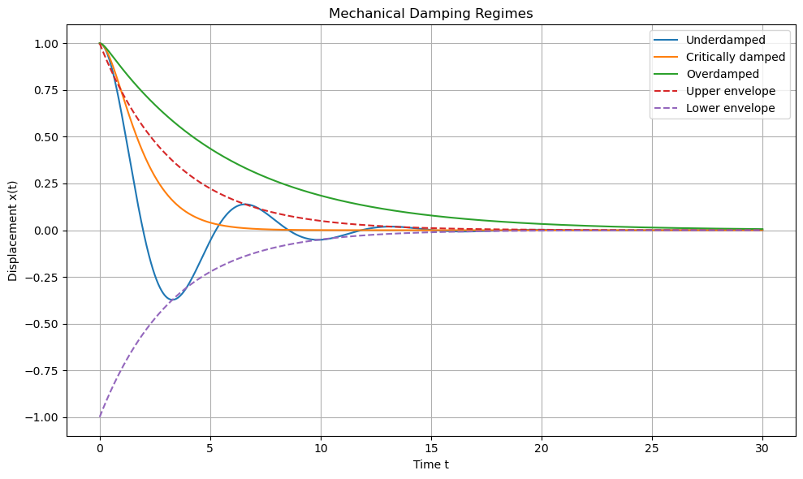

D6.1 Review of Oscillatory Motion — From Springs to Resonance#
D6.1.1 The 1D Spring: Simple Harmonic Motion#
We begin with the simplest and most important example of oscillatory motion: a mass attached to a spring.
The restoring force is given by Hooke’s Law:
Applying Newton’s second law:
This is the defining equation of simple harmonic motion (SHM).
General Solution#
where
Physical Interpretation#
\(A\) = amplitude
\(\omega\) = angular frequency
\(\phi\) = phase
The motion is:
periodic
bounded
symmetric about equilibrium
D6.1.2 General Form of SHM#
Any system obeying
Definition: General Form of Simple Harmonic Motion (SHM)
is undergoing simple harmonic motion, regardless of the underlying system.
👉 This is a powerful idea:
Many systems that are not obviously “springs” still behave like SHM under the right conditions.
Key Properties of SHM#
Motion is sinusoidal
Energy oscillates between kinetic and potential
The period is constant:
The importance of SHM lies not in springs themselves, but in the fact that many systems reduce to this form near equilibrium.
D6.1.3 Damped Oscillations#
Real systems experience energy loss due to friction or resistance.
We model this with a damping force proportional to velocity:
Newton’s second law becomes:
Characteristic Equation#
Assuming a solution of the form \(x(t) = e^{rt}\) leads to:
The nature of the motion depends on the discriminant:
1. Underdamped Motion (\(b^2 < 4mk\))#
The system oscillates with a decaying amplitude:
where
Behavior:
Oscillatory motion persists
Amplitude decreases exponentially
Energy is gradually dissipated
2. Critically Damped Motion (\(b^2 = 4mk\))#
The system returns to equilibrium as quickly as possible without oscillating:
Behavior:
No oscillation
Fastest return to equilibrium
Important in systems where overshoot must be avoided (e.g., measuring devices)
3. Overdamped Motion (\(b^2 > 4mk\))#
The system returns to equilibrium without oscillating, but more slowly:
where \(r_1\) and \(r_2\) are real and negative.
Behavior:
No oscillation
Slower return than critical damping
Motion is a sum of decaying exponentials
Damping determines whether oscillations occur at all. Only the underdamped case produces oscillatory motion, while critical and overdamped systems simply relax back to equilibrium.
# %reset -f
import numpy as np
import matplotlib.pyplot as plt
# ============================================================
# Mechanical damping illustration:
# 1) Underdamped
# 2) Critically damped
# 3) Overdamped
#
# Equation:
# m x'' + b x' + k x = 0
# ============================================================
# -----------------------------
# Mechanical parameters
# -----------------------------
m = 1.0
k = 1.0
b_critical = 2 * np.sqrt(m * k)
# Better choices:
b_under = 0.3 * b_critical # clearly oscillatory
b_crit = 1.0 * b_critical
b_over = 3.0 * b_critical
# Initial conditions
x0 = 1.0
v0 = 0.0
# Time array
t_max = 30.0
dt = 0.002
t = np.arange(0, t_max + dt, dt)
# -----------------------------
# RHS of first-order system
# -----------------------------
def mech_rhs(state, b, m, k):
x, v = state
dxdt = v
dvdt = -(b / m) * v - (k / m) * x
return np.array([dxdt, dvdt], dtype=float)
# -----------------------------
# RK4 solver
# -----------------------------
def solve_mechanical(b, m, k, x0, v0, t):
y = np.zeros((len(t), 2), dtype=float)
y[0] = [x0, v0]
for n in range(len(t) - 1):
h = t[n + 1] - t[n]
yn = y[n]
k1 = mech_rhs(yn, b, m, k)
k2 = mech_rhs(yn + 0.5 * h * k1, b, m, k)
k3 = mech_rhs(yn + 0.5 * h * k2, b, m, k)
k4 = mech_rhs(yn + h * k3, b, m, k)
y[n + 1] = yn + (h / 6.0) * (k1 + 2*k2 + 2*k3 + k4)
return y[:, 0], y[:, 1]
# -----------------------------
# Solve cases
# -----------------------------
x_under, v_under = solve_mechanical(b_under, m, k, x0, v0, t)
x_crit, v_crit = solve_mechanical(b_crit, m, k, x0, v0, t)
x_over, v_over = solve_mechanical(b_over, m, k, x0, v0, t)
# -----------------------------
# Envelope for underdamped case
# -----------------------------
gamma_under = b_under / (2 * m)
envelope = x0 * np.exp(-gamma_under * t)
# -----------------------------
# Plot: time behavior
# -----------------------------
plt.figure(figsize=(10, 6))
plt.plot(t, x_under, label='Underdamped')
plt.plot(t, x_crit, label='Critically damped')
plt.plot(t, x_over, label='Overdamped')
plt.plot(t, envelope, '--', label='Upper envelope')
plt.plot(t, -envelope, '--', label='Lower envelope')
plt.xlabel('Time t')
plt.ylabel('Displacement x(t)')
plt.title('Mechanical Damping Regimes')
plt.grid(True)
plt.legend()
plt.tight_layout()
plt.show()
# -----------------------------
# Useful quantities
# -----------------------------
omega0 = np.sqrt(k / m)
gamma = b_under / (2 * m)
omega_d = np.sqrt(omega0**2 - gamma**2)
print(f"Critical damping coefficient: b_c = {b_critical:.4f}")
print(f"Chosen underdamped coefficient: b = {b_under:.4f}")
print(f"Chosen critically damped coefficient: b = {b_crit:.4f}")
print(f"Chosen overdamped coefficient: b = {b_over:.4f}")
print(f"Natural angular frequency: omega_0 = {omega0:.4f}")
print(f"Underdamped decay constant: gamma = {gamma:.4f}")
print(f"Underdamped oscillation frequency: omega_d = {omega_d:.4f}")
print(f"Underdamped period: T_d = {2*np.pi/omega_d:.4f}")

Critical damping coefficient: b_c = 2.0000
Chosen underdamped coefficient: b = 0.6000
Chosen critically damped coefficient: b = 2.0000
Chosen overdamped coefficient: b = 6.0000
Natural angular frequency: omega_0 = 1.0000
Underdamped decay constant: gamma = 0.3000
Underdamped oscillation frequency: omega_d = 0.9539
Underdamped period: T_d = 6.5866
D6.1.4 Driven (Forced) Oscillations#
Now consider an external driving force:
Newton’s second law becomes:
Steady-State Solution#
After transient motion dies out:
where the amplitude is
Key Idea#
The system oscillates at the driving frequency, not its natural frequency.
D6.1.5 Resonance#
Resonance occurs when the system responds most strongly to the driving force.
The amplitude becomes maximal
This occurs near the natural frequency \(\omega_0\)
Physical Picture#
Low \(\omega\): system follows the force
High \(\omega\): system cannot respond quickly
Intermediate \(\omega \approx \omega_0\): maximum response
Important Subtlety#
With damping, the true resonance frequency is slightly shifted from \(\omega_0\).
D6.1.6 The Quality Factor (Q-Factor)#
The quality factor, or Q-factor, measures how lightly damped an oscillator is.
A high-\(Q\) oscillator loses only a small fraction of its energy during each cycle, so it continues oscillating for a long time. A low-\(Q\) oscillator loses energy quickly, so its oscillations die away rapidly.
Starting Point: The Damped Oscillator#
For a damped oscillator,
Dividing by \(m\) gives
We define
Then the equation becomes
For weak damping, the underdamped solution is
where
For weak damping,
Energy Decay#
The amplitude decays as
Since oscillator energy is proportional to amplitude squared,
the energy decays as
So the fractional rate of energy loss is
Energy Lost in One Cycle#
For weak damping, one oscillation takes approximately
During one cycle, the fractional energy lost is approximately
Substituting the period:
Definition of Q#
The Q-factor is defined as
Using
we get
Therefore,
Since
we also have
Interpretation#
This tells us that \(Q\) compares two timescales:
\(\omega_0\) measures how rapidly the system oscillates
\(\gamma\) measures how rapidly the amplitude decays
So:
High \(Q\) means many oscillations occur before significant energy is lost.
Low \(Q\) means energy is lost in only a few cycles.
Connection to Resonance#
The Q-factor also controls the sharpness of resonance.
For a driven oscillator:
high \(Q\) gives a tall, narrow resonance peak
low \(Q\) gives a shorter, broader resonance peak
A useful approximation is
where \(\Delta \omega\) is the width of the resonance curve near its peak.
Thus, \(Q\) can be interpreted as a measure of how selectively the oscillator responds to driving frequencies.
The Q-factor tells us how many oscillations the system can complete before losing a significant amount of energy. High-$Q$ systems are good at storing energy, while low-$Q$ systems are good at dissipating it.